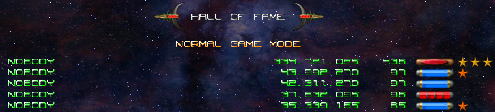

25.8. Next Steps¶
Besides squashing bugs, feel free to make changes and experiment with new features. You can browse the options below for ideas, but there are plenty of other directions you can follow.
Tip
Before you start making changes to the game, be sure to create a new Git branch!
git checkout -b new-branch-name
This way, you preserve a working copy of your project. If your new idea ends in disaster, you can always make a fresh start from the working application.
25.8.1. Appearance Options¶
The styling for the home and game page is pretty minimal. Change the look of the website by updating the rules inside the
style.cssfile. Alternatively, import the Bootstrap library and play around with differentclassvalues.Currently, the application doesn’t tell the user how to play Minesweeper. Include some instructions to fix this.
Automatically resize the table to fit different screens. Scrolling is distracting for this type of game! To test resizing behavior, click and drag the bottom corer of your browser window. You want the content to grow and shrink to keep all the rows, columns, and text in view.

Having to scroll to play Minesweeper provides a poor UX. The table should resize to fit in the available space.¶
25.8.2. Gameplay Options¶
Currently, the game board is set as a 10x10 grid. Try refactoring your code to work with different table layouts. Can you give the player a choice for the board they want to use?
How can you tell if your Minesweeper performance improved? By adding a timer, of course! Research different Python modules and/or functions to track how long it takes to win a game.
Add more server-side validation for the Main Menu input. Currently, there is no check for mine numbers that fall outside of the 5 - 25 range.
Entering the URL for the game board before visiting the home page throws an error. Smooth over this rough patch by checking if
num_minesis in the session.When a game is in progress, clicking the Back button in the browser causes problems. Explore what goes wrong, then try to code a solution.
25.8.3. Database Options¶
How about adding a Save Game feature? A player might want to leave their current game and come back later.
Try storing all of the session data to a new table in the database, then practice retrieving it.
Include a Save button on the game page, and add a Resume button to the main menu.
Save a player’s name (or initials) plus their win/loss data. Maybe you can display some type of High Scores list.
This is from an arcade game, not Minesweeper, but you get the idea.¶